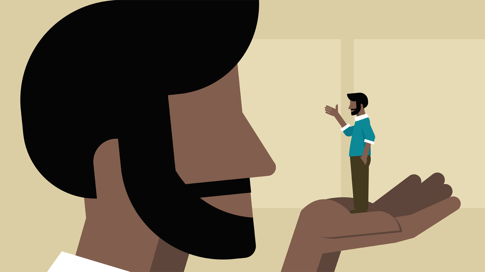

Relationship between mindfulness and self-awareness
Mindfulness and self-awareness are very closely related, in some ways they can almost be considered almost the same thing - Mindfulness has elements of self-awareness in it, and vice versa. I would say that mindfulness is a more broad term however, and explains a state of mind, whereas self-awareness is more of a momentary thing.
Self-awareness practices
I tried the body scan method of self-awareness. I did it sitting upright in a chair as I knew if tried it lying down I would definitely fall asleep! I have practised similar exercises to this in yoga classes, and am always surprised by how much tension I am holding in my body - especially my shoulders, back and legs. I find this also when I get a massage - only when lying down still on the table do I realise how tense I am holding myself, and it takes a while for me to get my body to fully relax. I am keen to try this practise at night after getting into bed in the hopes it helps me to sleep!
"My emotions are not me"
This section resonated really strongly with me, as I have definitely been a slave to my emotions in the past. Learning how to watch my emotions come and go without taking them on board as 'part of me' is something I would really like to improve on - I think it would lead to a calmer, more focussed mind, less likely to get bogged down with emotional responses.
